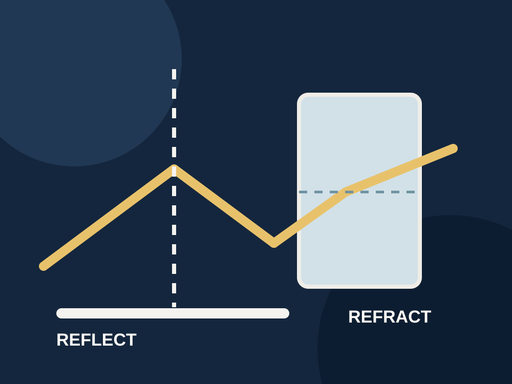

Year 8 Science
Reflection and refraction of light
Begin with how light makes objects visible, then build, test and apply ray models across five lessons.

Year 8 Science
Begin with how light makes objects visible, then build, test and apply ray models across five lessons.
